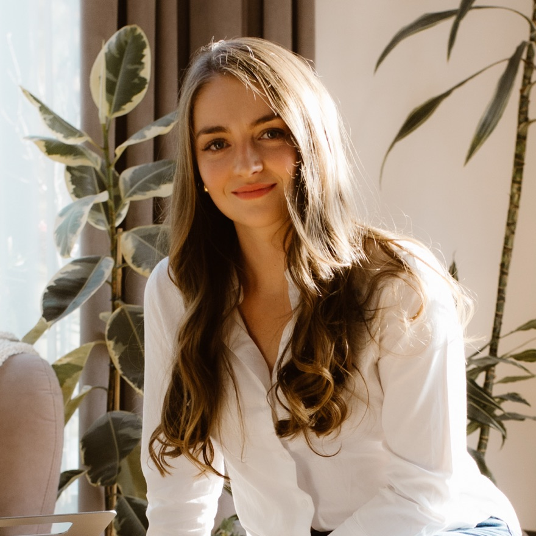

Anna Horodecka
UX . AI. PRODUCT DESIGN.

One-click checkout for Royal Mail senders
Integrating Fastlane by PayPal into Royal Mail's Send an item checkout so returning customers can pay with saved details. I worked through OTP, address and card display decisions with PayPal and the development team.
find out more →
AI assistant for sending parcels
Designing Postie, an AI chat assistant on Royal Mail's Send an item page. It started by helping people choose the right parcel size and service, then grew to cover the main sending journey, including tracking.
find out more →
Bulk postage for hundreds of orders at once
Designing the multi-order Apply postage flow in ClickAndDrop for sellers who ship at scale. The focus: smart weight logic, editing package contents, and clear feedback when only part of a batch fails.
find out more →
From audit to design system
Auditing ClickAndDrop's live components to find where code and design had drifted apart, then turning the findings into a Figma design system with shared tokens, components and rules for designers and developers.
find out more →About me
Hi, I'm Anna, a UX/product designer based in Poland. I design tools for shipping and logistics, from AI chat assistants to bulk workflows that people use every day. I like turning messy, complex processes into flows that feel simple. I work closely with developers to make sure the result holds up after handoff.
Outside of work, I'm in love with diving and travelling slowly and far. I recently spent eight months exploring Asia. I'm also learning to sail, which turns out to be a lot like product design: read the conditions, adjust, keep moving.

Skills
UX & Interaction Design
I design complex flows that feel simple: bulk actions, edge cases, validation and error states. I think in user journeys, not single screens.
UX & Interaction Design
I design complex flows that feel simple: bulk actions, edge cases, validation and error states. I think in user journeys, not single screens.
UX & Interaction Design
I design complex flows that feel simple: bulk actions, edge cases, validation and error states. I think in user journeys, not single screens.